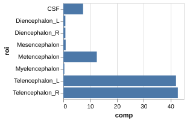

HTML, CSS and javascript#
HTML#
HTML is a markup language used by web browsers. HTML stands for hypetext markup language. Like all markup languages, it gives a text set of instructions that get interpreted into a nicer looking document. Other markup languages include XML, LaTeX, Org and markdown. (Yes, mark”down” is named as such since it’s a ultra-simple mark”up” language.)
We’ll need a little html knowledge since so much data science output is web-page oriented. Also, we’ll need to know a little about html to scrape web content. A web page typically has three elements: the html which gives the page structure and markup, css (cascading style sheets) for style and javascript for interactivity. We’ll cover a little html and javascript so that we can better understand certain data science products. However, you should take a web development course if you want in depth treatments.
We won’t spend much time talking about CSS. CSS gives a set of standards for the style of a web page. With CSS one can take the skeleton (HTML/JS) and dramatically change the style in the same way you could choose to play some sheet music in different ways. A quick tutorial on CSS can be found here.
Back to HTML. An HTML document looks something like this. Take a file, insert the following code and give it the extension .html. Then, open it up in a browser.
<!DOCTYPE>
<HTML>
<HEAD>
<TITLE> This is the web page title</TITLE>
</HEAD>
<BODY>
<H1>Heading 1</H1>
<H2>Heading 2</H2>
<P> Paragraph </P>
<CODE> CODE </CODE>
</BODY>
</HTML>
The resulting document will look like the following
Note
Heading 1
Heading 2
Paragraph
CODE
As you probably noticed, a bit of markup is something like <COMMAND>CONTENT</COMMAND>. The latter command has a forward slash. You should close your commands, even if your browser still renders the page like you like just because it makes for bad code not to. Also, someone else’s browser may not be as forgiving. Good code editors will help remind you to close your commands.
Browser stuff#
Note, since we’ll be working a lot with files, probably in one directory, you can use file:///PATH TO YOUR DIRECTORY to open up files (maybe even bookmark that directory). Also, CTRL-R is probably faster than clicking refresh and (in chrome at least) CTRL-I brings up developer tools (javascript console). When we have a web server running locallly, you usually go to localhost. For example, my jupyter lab server sends me to http://localhost:8888/lab/tree/. Here 8888 is a port, localhost refers to the server running on the lcoal computer and lab/tree is the relative path to the root of my jupyter lab server.
Browsers make choices in how they render HTML and CSS and implement javascript. So, unless you’re a web developer by trade, don’t get too exotic in your design choices. Also, a lot of HTML is auto generated. So, your mileage may vary by looking at page sources.
Hosting#
When you double click on your html file, it’s being hosted locally. So, no one else can see it. To have a web page on the internet it has to be hsoted on a server running web hosting software. Fortunately, github will actually allow us to host web pages. Basically, put an empty .nojekyll file in your repository (this tells it that it’s not a jekyll based web site and follow the instructions here. This will be really useful for us, since many of our datascience programs output web pages. For example, RMarkdown documents get translated into web documents. Similarly, jupyter-lab will output reveal.js (javascript/html) slide decks from our jupyter lab notebooks. Note that some of our programs will require servers that also run python or R in the back end, so github pages won’t suffice for that. There we need servers specifically set up to run those kinds of scripts.
Javascript#
Javascript is what makes webpages interactive. We’ll need a little javascript to understand how interactive web graphics work. Consider the following where we use javscript to change an HTML element in a web page
<H2 id="textToChange">Preference ?</H2>
<button type="button" onclick='document.getElementById("textToChange").innerHTML = "You prefer 1"'>1</button>
<button type="button" onclick='document.getElementById("textToChange").innerHTML = "You prefer 2"'>2</button>
Note
Preference ?
JSON#
JSON is a data format used in javascript, and adopted elsewhere. It’s a fairly straightforward
data structure. In fact, you might have edited some JSON data by editing your Jupyter Lab ipython notebook properties. It goes "name":value where objects are enclosed in curly braces and arrays in brackets. You have to separate distinct object or values with quotes.
{
"name" : "Bowie",
"species" : "dog",
"age" : 6,
"likes" : ["biscuits", "naps", "walks"],
"dislikes" : ["the cat", "getting groomed"]
}
Let’s define a variable in our JS console. Open up your JS console and type:
pet = {
"name" : "Bowie",
"species" : "dog",
"age" : 6,
"likes" : ["biscuits", "naps", "walks"],
"dislikes" : ["the cat", "getting groomed"]
};
Now try doing things like pet.likes and hit enter.
Example of using a javascript library#
Let’s use a javscript library to plot some data. Unless you need really fine control over the javascript elements, we usually do this by calling a python or R api to the JS library. But, it’s useful to do once to see how the library does things.
Recall this data.
roi comp
0 CSF 7.370845
1 Diencephalon_L 0.756288
2 Diencephalon_R 0.763409
3 Mesencephalon 0.864718
4 Metencephalon 12.488275
5 Myelencephalon 0.378464
6 Telencephalon_L 42.030477
7 Telencephalon_R 42.718368
Let’s use Vegalite. This package creates the plot via a JSON object that contains all of the data and instructions.
{
"data" : {
"values" : [
{"roi" : "CSF" , "comp" : 7.370845},
{"roi" : "Diencephalon_L" , "comp" : 0.756288},
{"roi" : "Diencephalon_R" , "comp" : 0.763409},
{"roi" : "Mesencephalon" , "comp" : 0.864718},
{"roi" : "Metencephalon" , "comp" : 12.488275},
{"roi" : "Myelencephalon" , "comp" : 0.378464},
{"roi" : "Telencephalon_L", "comp" : 42.030477},
{"roi" : "Telencephalon_R", "comp" : 42.718368}
]
},
},
"mark": "bar",
"encoding": {
"y": {"field": "roi" , "type": "nominal"},
"x": {"field": "comp", "type": "quantitative"}
}
This needs to be embedded into html, plus the vega JS libraries loaded to execute. I have an example here. The output looks like this

Typically, one creates these graphics in one’s home analysis language (like python or R). There are several libraries for doing as such. Some of the popular ones include: bookeh, vega, D3js, leaflet, but there are many more. There’s also connections to large private efforts including tableau, power bi, google charts and plotly.